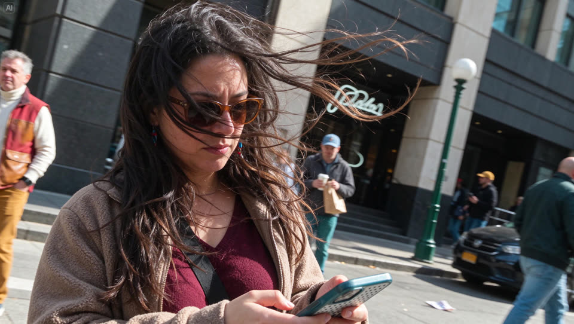

Seedream 5.5 official: unposed street candid, wind across her sunglasses and a whole frame tilted ~25° with consistent perspective
REA-072RealismSeedream 5.5 (ByteDance Seed; official model-page example)by ByteDance Seed (official Seedream 5.5 model page)2026-11-09

A street-style realism example that specifies the photographer's error as well as the subject. A woman in a burgundy top and light-brown jacket looks down at her phone while "Strong wind sweeps her hair across her sunglasses and face". Then the key instruction: "The entire frame tilts about 25 degrees clockwise, with consistent perspective across the figure, buildings, lamppost and pavement." It closes with the cues that make a frame feel unposed ("Natural clothing folds, hurried framing and asymmetric cropping"). Useful whenever a fashion or lifestyle frame looks too composed.
Prompt
A candid horizontal street photograph of a long-haired woman in a burgundy top and light brown jacket looking down at her phone. Strong wind sweeps her hair across her sunglasses and face. The entire frame tilts about 25 degrees clockwise, with consistent perspective across the figure, buildings, lamppost and pavement. Natural clothing folds, hurried framing and asymmetric cropping create an unposed everyday moment.
Our Seedance 2.5 adaptation
[ADAPTED for Seedance 2.5 by Grok Bot; not the creator's prompt. Follows the official BytePlus Seedance 2.5 prompt guide and its official sd25-pe prompt-optimizer skill: parameters only on the API line (not in the prompt body), subject + action + scene, then visuals, camera (move, subject, start, direction, arrival) and sound; only the source's own exclusions are kept.] API: duration 6, ratio 16:9, resolution 1080p, generate_audio true. 【Subject】A long-haired woman in a burgundy top, light-brown jacket and sunglasses looking down at her phone on a city pavement. 【Action】A strong gust sweeps her hair across her sunglasses and face; she keeps walking, brushes the hair aside once and keeps reading. 【Camera】Hurried handheld framing with the whole frame tilted about 25° clockwise for the entire shot, with consistent perspective across the figure, buildings, lamppost and pavement; asymmetric crop, a short follow as she passes. 【Visuals】Natural daylight, natural clothing folds pushed by the wind, an unposed everyday moment. 【Sound】Wind gusts, traffic, footsteps on pavement.
Tags: street candid, Dutch tilt 25°, consistent perspective, wind-blown hair, sunglasses, hurried framing, asymmetric crop, unposed, Seedream 5.5